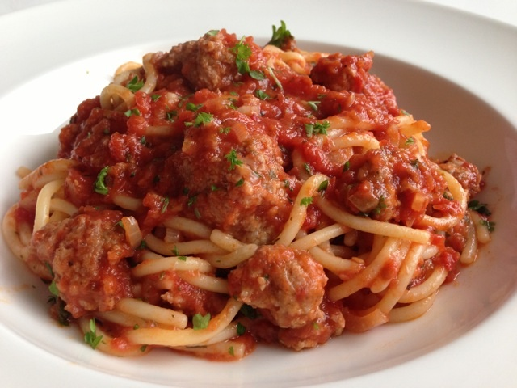

pasta-bolognese

ingredienten
- spaghetti
- gerookte spekblokjes
- petersellie
- peper
- eieren
- tomatenblokjes
- peper
- zout
- knoflook
- wortelen
- rodeuien
- rode wijn
- laurierblaadjes
- olijfolie
- puy-linzen
- kruiden
bereiding
- Pel en snipper de uien en de knoflook en fruit ze aan in olijfolie. Snij de wortelen en selderij klein en
laat ze meestoven.
- Blus de groenten met de wijn en laat de alcohol verdampen. Voeg de gedroogde kruiden, de linzen en de
tomatenblokjes toe. Laat 30 à 35 rustig stoven op een matig vuur tot de kikkererwten beetgaar zijn.
- Kook de spaghetti al dente, giet af en serveer met de vegetarische bolognese.